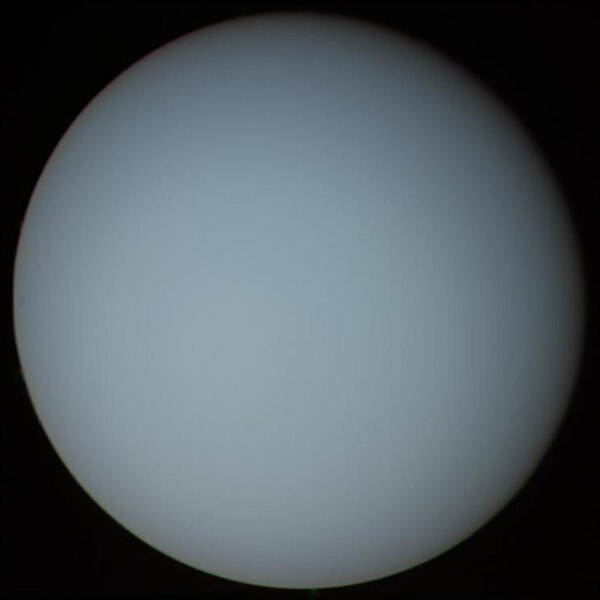

Уран
Уран — седьмая планета Солнечной системы по удалённости от Солнца. Имеет третий по величине планетарный радиус и четвертую по величине планетарную массу в Солнечной системе. Первая планета, открытая с помощью телескопа.Уран и Нептун имеют схожее строение и химический состав, отличающийся от строения крупных газовых гигантов Сатурна и Юпитера. По этой причине учёные часто относят их к другому классу, называемому «ледяные гиганты». Атмосфера Урана похожа на Юпитер и Сатурн по своему первичному составу — в основном водород и гелий, но содержит больше воды, аммиака и метана, а также следы других углеводородов. Это самая холодная планетарная атмосфера в Солнечной системе с минимальной температурой 49 К (-224 ° C) . Планета имеет сложную слоистую структуру облаков, состоящую в основном из воды в самых нижних облаках и метана в самом верхнем слое облаков. Внутренняя часть Урана состоит в основном из льда и камня.
Уран — наименее массивная из планет-гигантов Солнечной системы, он тяжелее Земли в 14,5 раза, превосходя её по размерам примерно в 4 раза. Плотность Урана, равная 1,27 г/см3, ставит его на второе после Сатурна место среди наименее плотных планет Солнечной системы. Средняя удалённость планеты от Солнца составляет 19,1914 а. е. (2,8 млрд км). Период полного обращения Урана вокруг Солнца составляет 84 земных года.
Как и другие планеты-гиганты, Уран имеет систему колец, магнитосферу и 27 спутников. Система имеет уникальную конфигурацию, поскольку её ось вращения наклонена вбок, почти в плоскости её солнечной орбиты. Следовательно, северный и южный полюса Урана лежат там, где у большинства других планет находится экватор. Скорость ветра на уране может достигать 250 м/с (900 км/ч).
Название планеты происходит от фигуры в древнегреческой мифологии, латинизированной версии греческого бога неба Урана (Ουρανός).